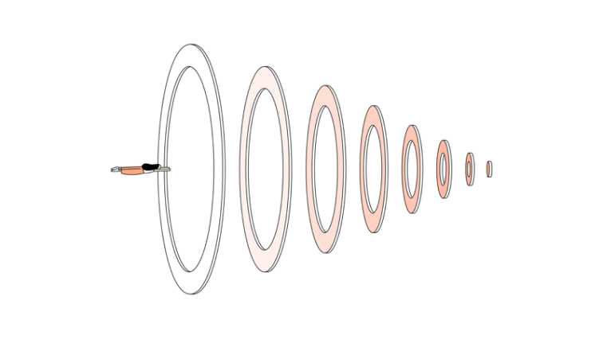

Whats your struggle
Stress, Sleep, Focus, Anxiety, Confidence, Motivation ....


Features Ressources

THE NEW YORK TIMES — #FOCUS — 10 MIN
Cal Newport: How to Actually, Truly Focus on What You're Doing
By Tim Herrera

YOUTUBE — #SLEEP — 1H 55MIN
CJRE #1109 - Matthew Walker
BY JOE ROGAN

THE GUARDIAN — #SLEEP — 10 MIN
Sleep: How Much Do We Really Need?
BY HANNAH DEVLIN

YOUTUBE — #FOCUS — 9 MIN/p>
I Quit Social Media For 30 days
BY MATT D'AVELLA